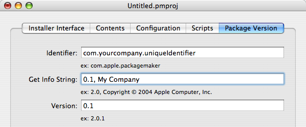

Versioning Your Package
The bundle identifier and version number of your package are very important. Both can be set in the “Package Version” tab of the PackageMaker user interface.
 The “Package Version” tabThe bundle identifier should be unique for all packages, including all packages you distribute. For example, if you were creating packages for iTunes and an iTunes daemon, you might give the packages identifiers of com.apple.iTunes.application and com.apple.iTunes.daemon respectively. Installer.app uses the bundle identifier to determine which package to upgrade during an upgrade install.
The version number is also important. Installer.app uses the version number to determine if an upgrade is needed from a previous install. It is also used to prevent downgrades. It need not match the version number of what you are installing.